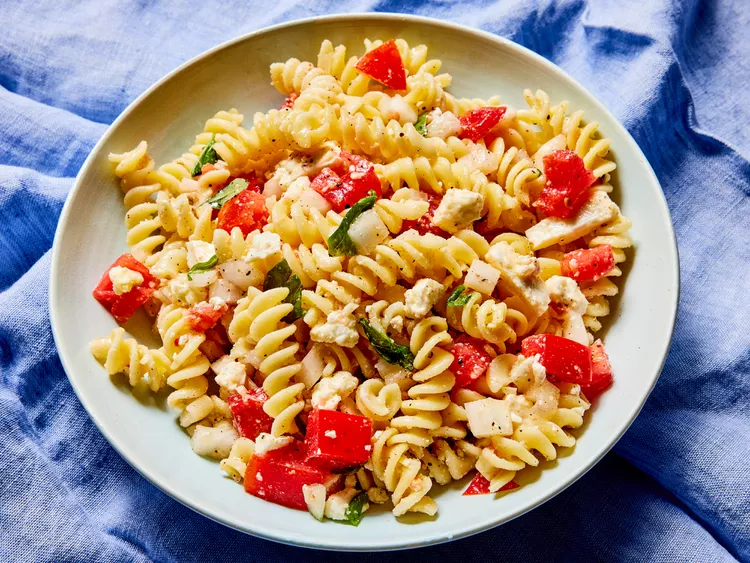

Tomato Basil Pasta

Description
This tomato basil pasta with feta is a simple, flavorful dish served at room temperature. It keeps well in the refrigerator and is just as yummy the next day for lunch as a cold pasta salad.
Ingredients
- 2 cups diced tomatoes
- 1 small onion, finely chopepd
- 6 tablespoons olive oil
- 6 leaves fresh basil, torn
- 2 cloves crushed garlic
- 10 ounces fusilli pasta
- 1 ½ cups crumbled feta cheese
- 3 tablespoons grated Parmesan cheese, or to taste
- salt and ground black pepper to taste
Steps
- Gather all ingredients.
- Stir together tomatoes, onion, olive oil, basil, and garlic in a medium bowl until combined; set aside.
- Bring a large pot of lightly salted water to a boil. Cook fusilli in boiling water, stirring occasionally, until tender yet firm to the bite, about 12 minutes. Drain.
- Toss warm pasta with feta and Parmesan cheese in a large serving bowl.
- Stir in tomato mixture until well combined; season with salt and pepper.